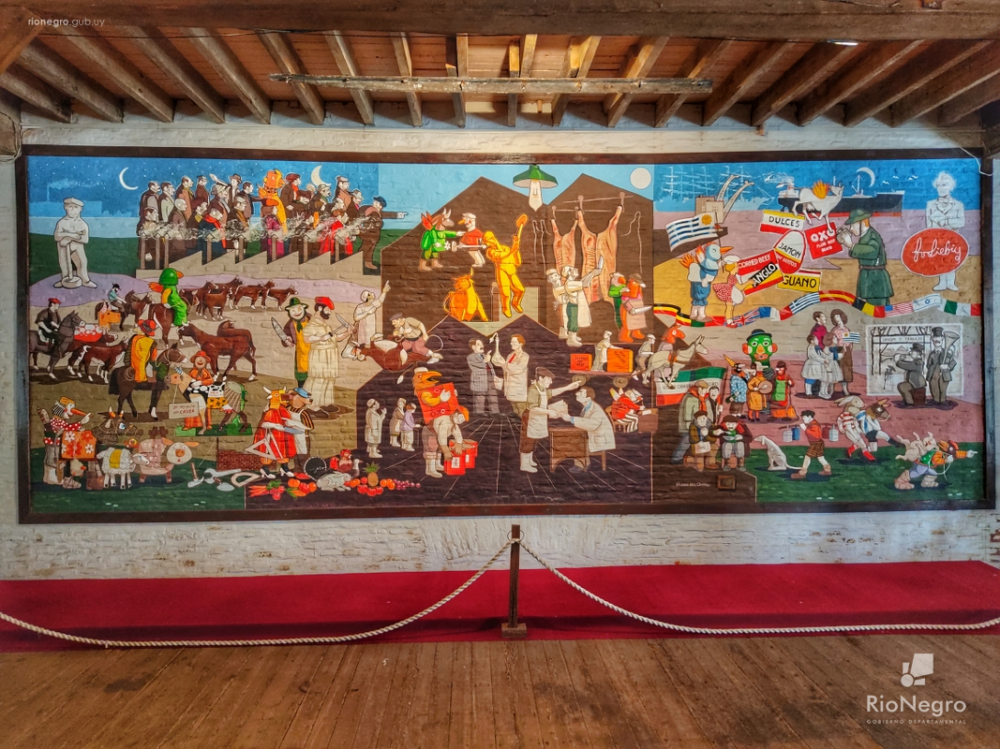

Museo de la Revolución Industrial

El Frigorífico Anglo: Patrimonio Histórico de Fray Bentos
El Frigorífico Anglo: Patrimonio Histórico de Fray Bentos
Fundada en 1865, esa colosal fábrica de alimentos nacida originalmente como Liebig’s Extract of Meat Company (LEMCO) exportó extracto de carne y corned beef durante más de un siglo a cinco continentes, lo que valió el mote de “la cocina del mundo”. En 1924 se convirtió en el Frigorífico Anglo del Uruguay, y entre 1968 y el cierre acaecido en 1979, fue gestionado por el Estado como Frigorífico Fray Bentos.
Hoy, el sitio del Frigorífico Anglo es Patrimonio de la Humanidad por la UNESCO desde 2015, honrando su importancia histórica y cultural. Este legado simboliza la prosperidad y el progreso que una vez trajo a Fray Bentos y a todo Uruguay.
Objetivos de la Entidad
Objetivos de la Entidad
1. Preservación Histórica
Reconocimientos
Reconocimientos